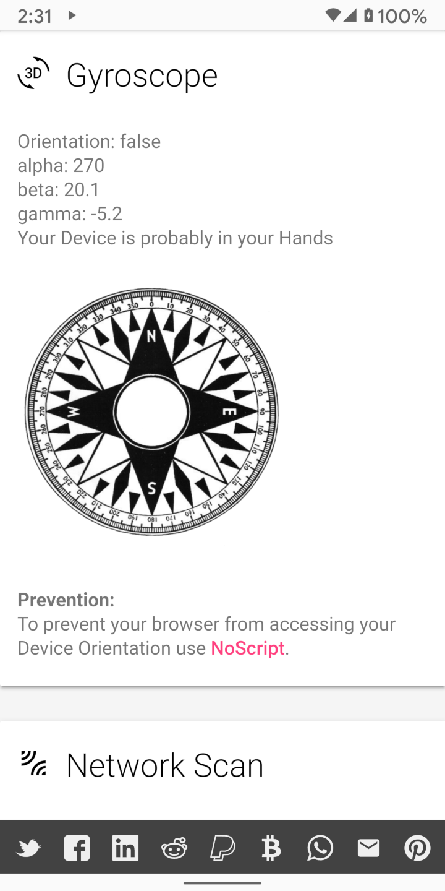

JavaScript Güçlüdür
İnternetin ilk günlerinde, web sayfaları statikti, bu, ekranda görüntülenen metinleri ve görüntüleri içerdikleri, ancak kullanıcılarla etkileşime giremedikleri anlamına geliyor.
Tabii ki, statik içeriklerin birçoğu ilginç olabilir. Dinamik web sayfalarını kolaylaştırmak için çeşitli teknolojiler geliştirilmiştir.
JavaScript bu teknolojilerden biridir.
JavaScript bir programlama dilidir. Çoğu web sunucusu, web sayfasının bir parçası olarak cihazlara gönderilen JavaScript ile yazılmış programları içerir.
Cihaz, yerel işlemcisinde JavaScript’i çalıştırıp web sitesindeki görüntüleri oynatabilen, bir menü açabilen ve daha birçok yararlı şey yapabilen programın komutlarını yürütür.
JavaScript Tehlikelidir
Tabii ki, bir web sayfasının gelişigüzel programları çalıştırma konsepti potansiyel olarak tehlikelidir.
Bu sebeple, virüs yüklemek gibi şeyler yapmaması için JavaScript üzerinde bazı sınırlamalar vardır. Ancak, bu sınırlamaların aşırı derecede geniş olduğu ortaya çıktı.
Aşağıda, JavaScript’in bir cihaz hakkında üretebileceği bilgi türünü gösteren bir web sitesi olan webkay’in ekran görüntüsü verilmiştir.
Browser Leaks de başka iyi bir kaynaktır.

Gizlilik amacı sebebiyle, internette gezinmek için JavaScript’i devre dışı bırakmak ideal olacaktır.
Ancak, amaçlarını yerini getirmesi için JavaScript’e ihtiyaç duyan ve o şekilde programlanabildikleri halde JavaScript olmadan düzgün çalışmayan bazı web siteleri vardır.
Privacy Browser, JavaScript’i açıp kapatmayı kolaylaştırarak bu sorunu çözme yoluna gider.
Gizlilik kalkanına dokunmak, onu mavi
veya sarı  (ikisi de JavaScript’in devre dışı olduğunu gösterir)
ve kırmızı (JavaScript'in etkin olduğunu gösterir) olarak değiştirecektir.
JavaScript etkinken ve devre dışıyken, webkay’in topladığı farklı bilgilere bakmak bilgilendiricidir.
(ikisi de JavaScript’in devre dışı olduğunu gösterir)
ve kırmızı (JavaScript'in etkin olduğunu gösterir) olarak değiştirecektir.
JavaScript etkinken ve devre dışıyken, webkay’in topladığı farklı bilgilere bakmak bilgilendiricidir.
İnternette JavaScript devre dışı bırakılmış olarak gezinmek ve yalnızca gerektiğinde etkin hale getirmek, gizliliği koruma adına çok yararlı olacaktır.
Buna ek olarak, JavaScript, modern web siteleriyle birlikte gelen ekstra süprüntüler ve çok sayıda rahatsız edici reklamlar için kullanılır.
Devre dışı bırakıldığında, web siteleri daha hızlı yüklenecek, daha az ağ trafiği tüketilecek ve daha fazla pil ömrünü sağlayan daha az CPU gücü kullanımına yol açacaktır.